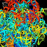

RESEARCH
Below are examples of ongoing research projects:
1. Origin and evolution of the ribosome
2. Viruses predate diversified cellular life
3. LUCA: The end of a planetary mega-organism
4. Origin and evolution of metabolic networks
5. Molecular clock of fold structures uncover the rise of planet oxygenation and aerobic metabolism
7. Crosstalk during the interaction of plants and microorganisms
___________________________________________________________________________________

ORIGIN AND EVOLUTION OF THE RIBOSOME
The ribosome is the molecular complex that is responsible for protein biosynthesis. We recently uncovered its origin and history. A careful phylogenomic analysis of RNA and protein molecules that make up this massive molecular ensemble shows that the most ancient RNA structure interacted with the most ancient protein and that this triggered a coordinated accretion process that ultimately resulted in a functional ribosomal core, half-way in evolution of life and prior to cellular diversification. The origin of translation (protein synthesis) has always been described as the chicken-and-egg problem of biochemistry. Our results take an important step back in time to clarify its early replicative origin and the early interaction of proteins and nucleic acids. The coevolutionary patterns we find exist between ribosomal proteins and RNA falsify the ancient ‘RNA world’ hypothesis and places the rise of genetics late in evolution.
• Harish and Caetano-Anollés (2012) PLoS ONE 7:e32776 (abstract)(PDF)(F1000)
• Study of ribosome evolution challenges RNA world hypothesis (press release)
• Caetano-Anollés (2013) Evidence against the RNA world hypothesi. NASA Astrobiology (online)
• Scharf (2012) Your grandmother was a molecule. Scientific American (online)
• Lewis (2012) New study contradicts RNA world theory. Biotechniques (online)
___________________________________________________________________________________
VIRUSES PREDATE DIVERSIFIED CELLULAR LIFE
Using structural phylogenomic methods we reconstructed the history of proteomes of viruses and cellular organisms. This universal ‘tree of life’ placed the viruses we sampled at its roots, suggesting viruses are distinct and ancient group.
• Nasir, Kim and Caetano-Anollés (2012) BMC Evol Biol 15:156 (abstract)(PDF)
• Study of giant viruses shakes tree of life (press release)(NSF)
• Riesenviren sin doch lebewesen. Spiegel, Wissenschaft (online)
___________________________________________________________________________________

LUCA: THE END OF A PLANETARY MEGA-ORGANISM
The last universal common ancestor of life (LUCA) was both simple and complex. An account of the structures and functions of this 'mega-organism' that covered the lands and the seas of primitive Earth ~3 billion years (Gy) ago revealed a functionally advanced cellular entity. It had functional ribosomal machinery capable of protein synthesis, but its RNA genome was relatively simple. The reign of this mega-organism ended with the rise of planet oxygenation (see below), which induced aerobic metabolism, lineages or organisms, and diversified life.
• Kim and Caetano-Anolles (2011) BMC Evol Biol 11:140 (abstract)(PDF)
• Seufferheld et al. (2011) Biology Direct 6:50 (abstract)(PDF)
• Life began with a planetary mega-organism. NewScientist (online)
• The last universal common ancestor had a complex cellular structure (press release)
___________________________________________________________________________________
ORIGIN AND EVOLUTION OF METABOLIC NETWORKS
The MANET database explores the evolution of biological networks For example, metabolic activities retrieved from the KEGG database (Japan) as entries in Enzyme Commission (EC) classification were linked to protein domain structures, and their evolutionary ages mapped to each enzymatic node of the metabolic network. A careful exploration of evolutionary patterns in these networks showed that certain metabolic pathways contained enzymes that were modular and had architectures that were old and widely shared among domains of life. We also revealed patterns of origin of modern metabolism. Metabolism originated in a “big bang”, with most enzymatic reactions at all levels of EC classification being associated with the nine most ancestral and widespread protein folds. We also revealed that the first enzymatic take-over of a prebiotic chemistry involved enzymatic activities important for nucleic acid components, such as the interconversion and biosynthesis of nucleotide derivatives. These results are highly significant.
The evolution of enzymes and metabolic pathways is under intense debate and is important for systems biology. There are indications that during evolution single enzymes have been recruited from different pathways. However, pathway duplication, enzyme specialization, retro-evolution, and de novo invention may play important roles. Our ultimate goal is to understand how these processes shape the evolution of metabolic networks.
• Caetano-Anollés and Caetano-Anollés (2013) PLoS ONE 8: e59300 (abstract)(PDF)
• Caetano-Anollés et al. (2009) Intl J Biochem Cell Biol 41:285-297 (abstract)(PDF)
• Caetano-Anollés, Kim and Mittenthal (2007) Proc Natl Acad Sci USA 104:9358-9363 (abstract)(PDF)
• Kim, Mittenthal and Caetano-Anollés (2006) BMC Bioinformatics 7:351 (abstract)(PDF)
• Evolution of metabolic enzymes reveal the importance of RNA (PNAS commentary)
___________________________________________________________________________________
MOLECULAR CLOCK OF FOLD STRUCTURES UNCOVER THE RISE OF PLANET OXYGENATION AND AEROBIC METABOLISM
We identified an important recurrence in evolution of domain structures. This clock placed timelines of domain appearance in the geological record. Remarkably, we find that the rise of planetary oxygen began ~2.9 Gy ago and unfolded pathways of aerobic metabolism. The rise of planet oxygenation was gradual and was likely triggered by the appearance of Mn catalase, probably in response to large amounts of radiation-induced oxygen peroxides in ice depositions of the first major glaciations. The identification of the molecular culprit of planetary oxygen enhances our understanding of metallomes and ocean biogeochemistry.
• Kim et al. (2012) Structure 20:67-76 (abstract)(PDF)
• Saito (2012) Structure 20:1-2 (abstract)(PDF)
• Jiang et al. (2012) PLoS Comp Biol 8:e1002426 (abstract)(PDF)
• Wang et al. (2011) Mol Biol Evol 28:567-582 (abstract)(PDF)
• Dupont et al. (2010) Proc Natl Acad Sci USA 107:10567-10572 (abstract)(PDF)
• Researchers identify molecular culprit in rise of planet oxygenation (press release)
___________________________________________________________________________________
UNTANGLING BIODIVERSITY
Molecular biotechnology provides tools for the evaluation and management of resources and change. Nucleic acid markers are important for such endeavor because they can measure constitution, diversity and evolution of genetic material, serving as suitable indicators of wealth, health and future of life. A number of techniques for genome analysis have been applied to the characterization of plant and microbes. These involve nucleic acid sequencing, amplification and hybridization. Some of these tools are currently being applied to study plant and microbial diversity and to determine the role of spontaneous mutation in evolution. We have also generated theoretical frameworks to explain hierarchical levels of structural organization that are widespread in biology and the diversity of organisms as these interact with the environment. Three persistence strategies, economy, flexibility and robustness, are used to explain the existence of a fully diversified tripartite cellular world and the existence of kingdoms of organisms in biology.
• Yafremava et al. (2013) Front Gene 4: 16 (abstract)(PDF)
• Mittenthal et al. (2012) Front Gene 3:147 (abstract)(PDF)
___________________________________________________________________________________
CROSSTALK DURING THE INTERACTION OF PLANTS AND MICROORGANISMS
Legumes and bacteria (rhizobia) interact to establish a unique association that results in the formation of a highly specialized organ, the nitrogen-fixing nodule. This symbiosis is central to agronomical improvement because it provides a biological alternative to the use of nitrogen fertilizer in agriculture. To satisfy the expectations of a growing human population which will surely double in the next 40 years and currently demands 23 million tons of nitrogen per year, crop yield must increase without fertilizer-mediated pollution (leaching of toxic nitrates and ozone depletion). Therefore, biological nitrogen fixation offers the natural framework of a sustainable agricultural system and the possibilities of improvement of legumes through breeding and genetic engineering.
Studies focus on the genes and molecular mechanisms that are responsible for switching on or off the cascade of developmental changes that occur when legume roots are infected by rhizobia, the symbiotic bacteria. Infection is initiated by rhizobial lipo-oligosaccharide signals. It results in cortical cell re-differentiation that leads to the formation of a new meristem which then develops into a nodule. Although the bacteria trigger this developmental sequence, it is the host which controls most facets of it. We have identified two very important genes, nnr and nts, that appear to be involved in these central aspects of host control. These genes are involved in signal transduction and control the efficiency with which nodule meristems progress into mature nodules.
Other aspects of the signal interplay between microbes and plants are being investigated. Bacterial N-acyl homoserine lactone (AHL) signals coordinate the behavior of individual microbial cells. The successful infection of eukaryotic hosts by bacteria seems particularly dependent on such AHL-mediated “quorum sensing” regulation. The model legume Medicago truncatula detects nanomolar to micromolar levels of bacterial AHLs and responds to changes in the accumulation of hundreds proteins, by the activation of gusA reporter fusions in a gene and tissue-specific manner, and by altered secretion of compounds that mimic AHLs. Eukaryotes respond extensively and specifically to bacterial-quorum signals and this behavior could play important roles in the beneficial or pathogenic outcomes of the interaction between plants and microbes. We are currently exploring links between these responses and the developmental trigger of symbiotic and pathogenic responses.
• Mathesius et al. (2003) Proc Natl Acad Sci USA 100:1444-1449 (abstract)(PDF)
• Caetano-Anollés (2001) Agro-Food-Industry Hi-Tech 12:32-35.
• Caetano-Anollés (1997) Fields Crops Research 53:47-68.
___________________________________________________________________________________
Gustavo Caetano-Anollés Lab - Evolutionary Bioinformatics at UIUC
Home / Research / Resources / Publications / Courses / Lab Members / Links